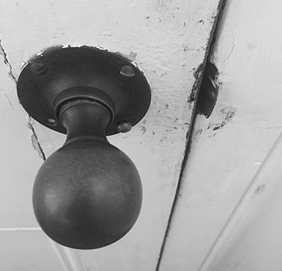
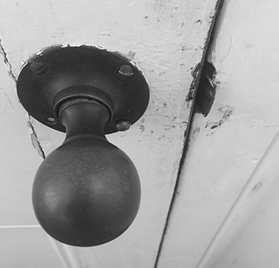
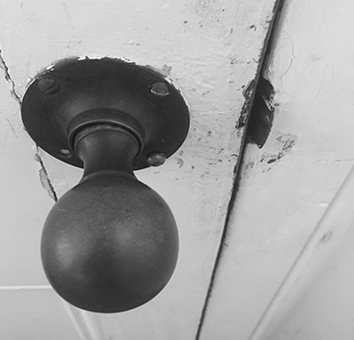

HANDLES
Handles provide a means of opening doors, draws, cupboards, or holding various items. Intended to assist users lives with offering and directing a way of using a particular item.
 


With a focus on dissecting minor interactions of everyday life, Small Moments seeks to expose these occasions. Experiences such as using door handles, locks, or keys, many individuals do not fully recognise these interactions despite their importance and frequent usage. Displayed below are a range of examples from each of these areas.
one link
Handles provide a means of opening doors, draws, cupboards, or holding various items. Intended to assist users lives with offering and directing a way of using a particular item.

two link
From handles, locks present a way of keeping a passageway closed, allowing individuals to securely protect possessions from unintended users. Similar to handles, locks come in a range of shapes and forms to perform their intended task of providing confidence in storing content.
three link
Where there are locks there are keys. In order for owners to pass through areas keys offer a means of unlocking these doors via specific keys to specific locks allowing this access. Keys are commonly used for external doors of architectural forms, as well as the likes of cars and gates.